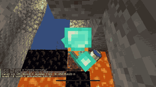
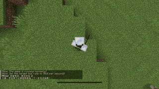
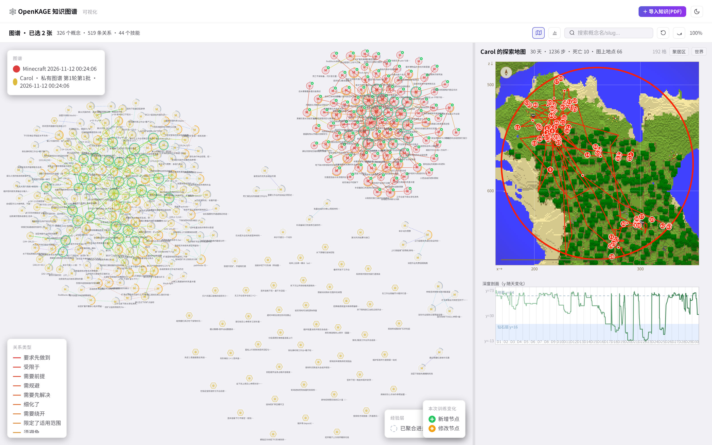

双层知识图
记忆层保存与情境绑定的个体记忆；经验层保存可迁移经验和可执行技能，并保留适用条件。
Key ideas
知识的积累、共享与复用形成持续演进的闭环，让群体经验进入每一个智能体的后续决策。
记忆层保存与情境绑定的个体记忆；经验层保存可迁移经验和可执行技能，并保留适用条件。
技能每晚原样共享；每 K = 2 个游戏日，文本经验被整合进持续演进的共享图。
规划时同时读取本地图与共享图的子图，让积累的知识重新进入决策。
框架本体、两个基线、指标 CLI、绘图管线与只读可视化网页都在仓库内。
Behavior demos
六段代表性行为展示智能体在 Minecraft 中积累经验，并通过意图感知检索复用群体共享的技能。






Viewer
只读界面用于查看一次运行中的知识状态：共享与私有图谱、探索轨迹、成就进展，以及概念或技能节点上的条件、经验与技能细节。




Quickstart
核心仓库包含代码、提示词、配置、分析脚本与可视化界面；完整运行记录单独发布。
python experiments/paper_metrics.py --cell ds_openkage --summary
python experiments/plot_paper_progress.py
python viewer/server.py